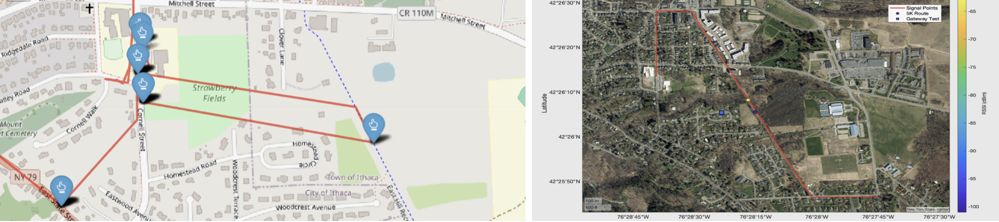
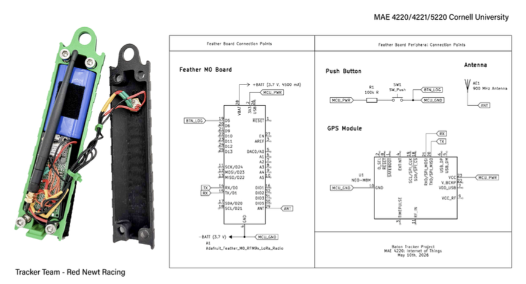

I built the electronics, firmware, software, and electromechanical design for a real-time GPS relay baton tracker, deployed for the Seneca 7, a 77.7-mile relay race with no reliable cellular coverage along most of the course.
Situation
Outcomes
The Problem
Seneca 7 is organized by Red Newt Racing and the Finger Lakes Running Club, an annual 77.7-mile relay around Seneca Lake that draws over 2,000 participants from 16+ states across 300+ teams, and raises roughly $20,000 per edition for 20+ local non-profits. The race currently uses a slap bracelet as the baton: no real-time location data, no per-runner performance metrics, no automated handoff detection. That puts a real operational burden on the 200+ volunteers staffing the course and leaves participants without the data modern endurance events routinely provide.
The actual engineering problem is connectivity, not tracking. Cellular coverage along the lake, especially the eastern shore through Yates and Schuyler counties and the western shore between Watkins Glen and Dresden, is inconsistent enough that a standard cellular GPS device would simply fail in those zones. RFID was explicitly ruled out by race staff after past dead-zone failures in the gorge sections. That left LoRaWAN: a low-power wide-area protocol that can transmit 10 to 16 km in rural line-of-sight conditions with no cellular infrastructure at all.
I built the tracker against that constraint: a reusable baton that logs GPS position, detects handoffs via an integrated button, and streams live data to a custom web interface, working entirely over a private LoRaWAN network the team stood up specifically for this race.

Field testing near Seneca Lake, where cellular coverage drops out along significant stretches of the course
I evaluated three gateway concepts before settling on the final architecture. A satellite uplink would have worked regardless of geography, but the terrain around Seneca Lake has dense tree cover that breaks satellite line-of-sight, and the cost and latency weren't justified for this timeline. A fixed high-elevation gateway, sited in Dundee for its elevation advantage over the course, was the second option, but I couldn't secure a deployment site from a property owner in time.
The architecture that actually shipped is a mobile gateway: a MultiTech MTCDT-L4N1 LoRa gateway, powered by a 99.9 Wh portable power station, riding in a support vehicle that trails the race field. That solved the elevation and siting problem at once, the gateway just stays close to whichever runner is currently carrying the baton, with a car-outlet inverter as backup power for unlimited runtime. Each baton broadcasts a unique ID, GPS coordinates, and button state to The Things Network every 30 seconds; the gateway picks it up and forwards it into the same pipeline regardless of where on the course it is.
Three-layer system: baton hardware, TTN network transmission, and the Streamlit backend
The first 3D-printed alpha prototype, named for its blue-and-yellow color scheme. A larger casing with room for the battery, the Feather M0 board, antenna, and the rest of the electronics. Confirmed basic TTN connectivity and GPS acquisition before anything else was optimized.
Swapped the GPS module for a NEO-M8 over TX/RX, added heat shrink inside the button for reliability, and slimmed the casing. Split into two parallel designs, V2a for fixturing reliability and V2b for ergonomics, after a design contradiction between the two goals forced a real tradeoff decision.
The first fully usable electromechanical design: ergonomic grips, a carabiner loop, weather-protected access ports, and a woven rear strap, all printed in matte PLA. This is the version used for all verification testing, the Seneca 7 race, and the Belle Sherman 5K.
The V2a/V2b split is the real engineering story here. V2a prioritized high-reliability fixturing for the button and Feather board; V2b prioritized ergonomics and got the outer diameter down to about 1.5 inches based on direct user testing. Those two goals genuinely fought each other in CAD, which is exactly why I built both as separate models rather than trying to force a compromise blind. The Finalist is what came out of a design review across both: keep the reliable fixturing from V2a, keep the ergonomic target from V2b, and add the weatherproofing and strap mounting the user study said the device actually needed.
| Microcontroller | SparkFun Feather M0 |
| Radio | LoRaWAN, via TTN |
| GPS module | NEO-M8 (TX/RX) |
| Handoff detection | Integrated push-button |
| Enclosure | Matte PLA, FDM-printed |
| Mounting | Carabiner loop, woven strap, handheld grips |
| Gateway | MultiTech MTCDT-L4N1, mobile-deployed |
| Transmit interval | 30 seconds |

Internal electronics: Feather M0, GPS module, and LoRaWAN radio
Software
I built both halves of the software stack. Onboard the Feather M0, firmware reads the GPS module and button state and packages a unique baton ID, latitude, longitude, and handoff status into a LoRaWAN packet sent to TTN every 30 seconds, with basic encryption on the payload given the scale of the data involved. On the backend, I built a Streamlit application with a custom MQTT listener that authenticates against the TTN console and decodes incoming packets in a standard Python script, rendering a live map and per-runner statistics in the browser, desktop or mobile, with caching so anyone with the link can see both historic and live data.
The interface has two controls at the top: Clear All, to reset the session, and Export All, to pull the full historic dataset as a CSV for post-race analysis. Keeping the architecture this minimal was deliberate, every layer between the baton and the browser is a place data can get delayed or dropped, and 30-second freshness only matters if the rest of the pipeline doesn't introduce its own lag.
Before locking the Finalist form factor, I ran a user study with 45 runners (25 female, 20 male) targeting exactly the question that mattered for design: how do distance runners actually carry things on their body. 65% said they don't carry items in their pockets while running, which immediately ruled out a pocket-only design as the primary form factor. 47% said they hold their phone during a run, evidence that runners will tolerate gripping a handheld object, which supported keeping a grippable baton on the table instead of forcing a fully hands-free design.
The third question, how runners prefer to strap things to their body, came back split: waist packs led at 42%, followed by arm straps at 20%, back-mounted at 19%, and pocket carry at 15%. No single method dominated, which is the finding that actually drove the design decision: instead of optimizing the Finalist for one mounting style, I built it with a multi-configuration attachment system, a carabiner loop, a woven strap, and a slim enough profile to be gripped by hand, so it would work across whatever a given runner already uses. I paid particular attention to female athletes, who made up the majority of the study sample and generally have less built-in storage in standard running apparel, a constraint that's easy to miss if you only design around your own habits.
I ran verification in three stages. First, campus runs: pressing the handoff button every few minutes while watching the Streamlit UI update live, confirming the basic data pipeline end to end before trusting it anywhere else. Second, a field deployment near Seneca Lake with the mobile gateway running from the support vehicle, which confirmed the gateway could connect to the baton but didn't yet establish a clean range curve, the signal was strong but I hadn't isolated exactly how far the baton could be from the gateway and stay connected.
The Belle Sherman 5K closed that gap. With fewer trees and less elevation change than the lake course, it was a cleaner environment to isolate the variable that mattered: distance. With a stationary gateway, only two data points were successfully received over TTN for the full run, which led directly to the key technical finding of the project, the baton and gateway only communicate reliably within about 600 feet of each other. I ran the resulting signal data through MATLAB to characterize received signal strength as a function of baton-to-gateway distance, which is now the baseline range data any future enclosure redesign needs to beat.
The Finalist enclosure has a real, known limitation: the compact V3 redesign measurably degraded antenna performance to get the ergonomic profile down to 1.5 inches, a tradeoff I made deliberately but flagged clearly for whoever picks this up next. The next enclosure revision needs dedicated antenna clearance, or an external stub antenna through a sealed port, before the range numbers can improve. Full-course gateway range wasn't completed in this cycle either, and the current enclosure hasn't been tested against a formal IP ingress standard, both real gaps, not oversights I'm glossing over.
Only one Finalist unit exists. Race-scale deployment means roughly 300 simultaneous transmitting batons sharing TTN gateway bandwidth, which is a fundamentally different engineering problem than the single-device testing I was able to run, packet collision rates and duty-cycle compliance at that scale are untested. I documented all of this explicitly in the final report specifically so the next team doesn't have to rediscover it: a batch of 10+ units for load testing, a systematic RSSI survey of the full 77.7-mile course, and a move from PLA to PETG or ABS for UV and impact resistance across multiple race seasons are the next priorities, in that order.
What I'm proudest of here isn't any single component, it's that the full pipeline, GPS acquisition, LoRaWAN transmission, TTN routing, MQTT decoding, and live display, worked end to end, verified across three different real-world environments, for a race that genuinely had no working alternative before this.
Project Documents